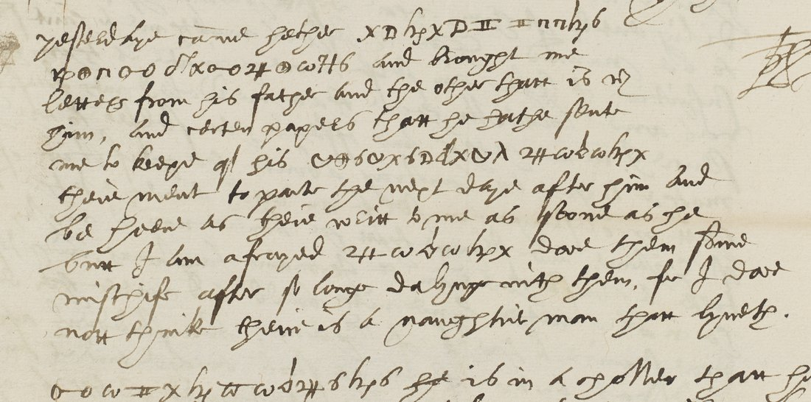

. Wikimedia Commons, public domain.")

At a glanceKey from adjacent plaintext · partial (100% of the cipher)
- The letter
- Sir Edward Stafford, Paris, 20 August 1586, almost certainly to Sir Francis Walsingham; clear English with five short cipher runs in the postscript.
- Where
- British Library, Harley MS 1582 f. 65v; DECODE R8500, listed with no decryption and an unknown recipient.
- The cipher
- A homophonic alphabet of letter forms and graphic signs, plus single-sign and numeric codes; the runs have no glosses.
- How it was read
- The key was rebuilt from two sibling letters: f. 73r, with glossed cipher words, and f. 72r, a clear decipherment of the long passages on f. 71. Sign 6 is e, not a null.
- What it says
- Junius’ son came from Cambrai with letters from his father; Stafford fears Balagny means them mischief.
- Still open
- Nothing, though four symbol values rest on context.
01 The letter and the cipher
Ff. 65r–65v are in Stafford’s own hand. The clear text reports on Captain Blaize, the Neapolitan with Cesar, his fortifications and dealings in Spain and Naples, on Locatello, and on a book lately printed at Rome by Dr Sanders. A note in the margin of f. 65v forwards a request from “one that was Mr Dennys man”. The address leaf, f. 66v, carries the endorsement “20 August 1586. From Sr Edw. Stafford”.
The postscript below the signature holds five cipher runs, written in the same line as the clear words. The signs are a mixture of letter forms and graphic signs (x D h II n oo O+ w 24 H λ), the same inventory as Stafford’s other letters to Walsingham in the volume.

02 Recovering the key
Harley MS 1582 holds four Stafford despatches of August–November 1586 in the same cipher (DECODE R8500–R8504). Two of them carry the plaintext:
- f. 73r (R8502). A second hand glossed the cipher words:
x D h x D IIJunius,d w o o 24 Oo w H 6Cambray,24 w a w B h H 6Balagny,B 6 O+ Oo o w h x 6Germany, and a sum 10000 crownes. - f. 72r (R8501). A whole page of clear text in a small hand, headed a., b. and c. to match the ciphered passages on ff. 71r–71v: the French ambassador’s wife writing to the Duchess of Nemours that the Queen of Scots “is in very ill state”; Villeroy sending the ambassador’s secretary to “make away Nau”. About 480 cipher signs on f. 71 were aligned against it.
The alignment gives a letter alphabet with homophones, plus single-sign and numeric codes:
| letter | signs | letter | signs |
|---|---|---|---|
| a | w | n | h |
| b | 24 | o | n |
| c, l | d | p | E |
| e | 6 | q | Δ |
| f | ψ | r | O+, Oo |
| g | B | s | II, #, I |
| h | λ | t | u, A |
| i, y | x, H | u, v | D, ρ |
| k | M | w | D d |
| l | a | m | oo |
Codes: B alone Villeroy, O+ alone the Duke or Duchess of Nemours, 120 the French ambassador, 47 the King of Navarre; 20, 22 and 54 recur. The earlier interpretation of 6 as a null (from the four runs of R8503) is wrong: it is the commonest letter, e.
03 The decipherment
| run | ciphertext | reading | in context |
|---|---|---|---|
| 1 | x D h x D II · II n n h 6 | Junius sonne | “yesterday came hither Junius’ son” |
| 2 | f O+ n oo · d x oo 24 O+ w 7 H 6 | from Cambraye | “from Cambray, and brought me letters from his father and the other that is with him” |
| 3 | d O+ 6 w x A · D d x u λ · 24 w a w h H x | credit with Balagny | “and other papers that he hath sent me to keep of his credit with Balagny” |
| 4 | 24 w a w h H x | Balagny | “but I am afraid Balagny dare them some mischief after so long dealing with them” |
| 5 | oo w H x h u w σ H δ h 6 | mayntayne | “[I] maintain he is in another than he hath heard often from your honour of long time” |
Balagny is Jean de Monluc, seigneur de Balagny, who held Cambrai; the Junius whose son came from Cambrai is not identified further here.
04 What remains uncertain
- Run 3:
Aas t and the fourth sign as d in “credit” (C: context, one other occurrence ofA= t on f. 71r). - Run 5:
σandδhave no sibling occurrence; “mayntayne” is inferred from the ten confirmed signs around them (C). - All other signs are confirmed by the sibling key (H). 61 tokens, all giving sense.
Full texts
The transcription and the decryption of every document on this page, so that the reading can be used and checked. Short files are shown here; all are in the repository.
R8500, Sir Edward Stafford to [Walsingham], Paris, 20 Aug 1586, postscript f. 65v read in part
A clear holograph despatch from Stafford in Paris about Captain Blaize, Locatello, Cambrai and a book printed at Rome by Dr Sanders; the five ciphered runs of the postscript say that Junius' son came from Cambrai with letters, about papers of his credit with Balagny (governor of Cambrai), and Stafford's fear that Balagny means them some mischief. Key rebuilt from the glossed and deciphered sibling letters in the same volume.
Builds coherent sentences, but under the read bar of 95% of words read as sense (89% here); the holes are marked in the reading.
Transcription
# DECODE R8500, BL Harley MS 1582 f. 65v, postscript; five cipher runs (sign names as in NOTES.md) x D h x D II II n n h 6 f O+ n oo d x oo 24 O+ w 7 H 6 d O+ 6 w x A D d x u λ 24 w a w h H x 24 w a w h H x oo w H x h u w σ H δ h 6
Decryption
1 Junius sonne (came hither Junius' son) 2 from Cambraye 3 credit with Balagny (to keep of his credit with Balagny) 4 Balagny (I am afraid Balagny dare them some mischief) 5 mayntayne? (probable; two signs uncertain)
Key: key.tsv, alignment.txt
05 Sources
- British Library, Harley MS 1582 ff. 65–66 (DECODE R8500); siblings ff. 71–72 (R8501), f. 73 (R8502), ff. 74–75 (R8503, see Stafford 1586), ff. 76–77 (R8504). Images on DECODE, not reproduced.
- Calendar of State Papers Foreign, Elizabeth, vol. 21 pt 1, August 1586 (British History Online): a different Stafford letter of 20 August; this one is not calendared.
Notes, the transcriptions, the f. 72r decipherment, the alignment and the key are in targets/harley1582r8500/.